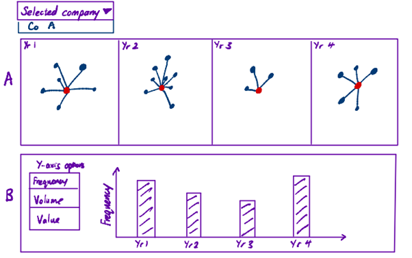
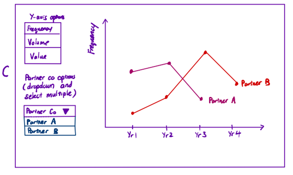
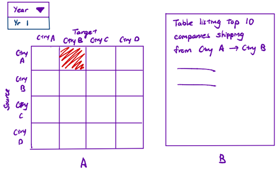
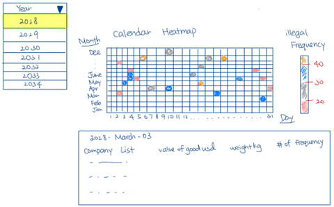
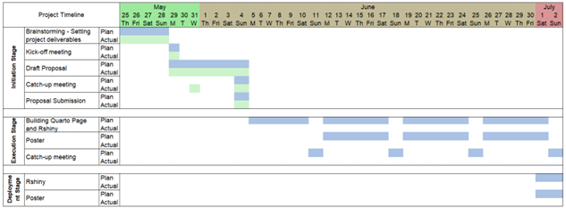

Proposal
1 Introduction
Illegal, unreported, and unregulated (IUU) fishing poses a significant threat to marine ecosystems worldwide. The World Wildlife Fund (WWF) estimates that IUU fishing equates to approximately 11-19% of reported global fisheries production and leads to losses of roughly $10-23.5 billion in value. Besides leading to the depletion of fish stocks, ecological imbalances, and negative impact on the livelihoods of small-scale coastal fishing communities that depend on fisheries for food, IUU fishing has also been associated with other crimes such as transnational syndicates and human trafficking (WWF, n.d.).
In general, IUU fishing refers to all fishing that breaks fisheries laws, or occurs outside the reach of fisheries laws and regulations (Bondaroff et al., 2015). It is important to distinguish the specific elements of IUU fishing so as to enable targeted recommendations to combat IUU fishing:
- Illegal: Fishing conducted by foreign vessels without permission of a jurisdiction
- Unreported: Fishing which have been misreported/not reported to national relevant authority
- Unregulated: Fishing conducted by vessels without nationality
Understanding the modus operandi of IUU fishing will enable the relevant authorities to identify individuals and entities that fit a pattern of illegal fishing. The following indicators are some red flags which can be used to identify entities that are involved in IUU fishing (Widjaja et al., 2020):
- Transshipment: Moving the catch from one vessel to another at sea or at port. The tuna fish comprises a large portion of this, as it can be frozen and is highly-valued.
- Data manipulation: The species or amounts caught, and the catch locations may be misreported or manipulated.
- Vessel identify fraud: A vessel may use more than one identity, appearing under different names in different jurisdictions, or may use the identify of another genuine vessel, which results in 2 or more vessels having the same identify concurrently.
Awareness of different facets of illegal fishing is imperative to combating IUU fishing, so as to protect marine ecosystems, ensure sustainable fisheries, and uphold human rights. The worrying statistics and indicators of IUU fishing underscore the urgency for targeted interventions.
2 Objectives
Recognising the urgent need to address this issue, the country of Oceanus has partnered with FishEye International in the VAST Challenge 2023, which focuses on IUU fishing. By harnessing the capabilities of visual analytics, our team aims to address Mini-Challenge 2 to uncover hidden relationships and detect potential IUU fishing activities.
The team will work with the main dataset, and additional bundled edge data provided by FishEye to fulfil the following objectives:
- Identify influential companies potentially involved in illegal fishing practices;
- Assess the reliability of the additional data bundles to identify new temporal patterns or anomalies for companies.
Through this data exploration and advanced visualisations, the team aspires to provide actionable insights that will aid in the identification of illegal fishing practices.
3 The Dataset
The following datasets from the VAST Challenge 2023 - Mini-Challenge 2 will be used:
Main graph file: mc2_challenge_graph.json containing the main graph with 34,552 nodes representing the company that originated (or received) the shipment, and 5,464,092 directed edges representing directed edges from shipper to receiver. Additional node attributes (shpcountry and rcvcountry) and edge attributes (arrivaldate, hscode, valueofgoods, weight etc.) are available.
12 bundle files: carp.json, catfish.json, chub_mackerel.json, cod2.json, herring.json, lichen.json, mackerel.json, pollock.json, salmon.json, salmon_wgl.json, shark.json, tuna.json containing additional AI-predicted edges that can be added to the main graph.
4 Methodology
The steps required in this project are as follows:
Data preparation: To perform data cleaning, wrangling and conversion of datasets into a format that can be plotted into network graphs and other visualisations. As the datasets are huge and contain noises, filtering will be performed based on challenge requirements (e.g., filtering out shipments where hscodes are not related to live fishes) to reduce nodes and edges to reasonable numbers for visualisation.
Data analysis and visualisation: Use appropriate static and interactive statistical graphs to address the questions in the challenge.
Interactive Dashboarding: Selected visualisations will be deployed as an interactive dashboard in an RShiny app. The RShiny app aims to enable FishEye International’s investigators to explore the prepared and filtered dataset for discovery of patterns and anomalies.
5 Approach
5.1 Identification of temporal patterns
Problem Statement: Use visual analytics to identify temporal patterns for individual entities and between entities in the knowledge graph FishEye created from trade records. Categorise the types of business relationship patterns you find.
Approach:
First, we will visualise the temporal patterns of influential companies in the network.
- Three sets of influential companies will be identified:
- Importers – Top 10 companies with the highest in-degree centrality
- Exporters – Top 10 companies with the highest out-degree centrality
- Intermediaries – Top 10 companies with the highest betweenness centrality
- Visualisations will be made available on the RShiny app (see prototype 1). Users can select any one of the identified companies and the following visualisations will be generated for exploring and identifying temporal patterns:
- Network graph of the company and its linked nodes over the years (panel A)
- Bar chart of the total frequency, weight and value of shipment of the company over the years (panel B)
- Line chart of the company’s trade with its partner companies over the years. Multiple partner companies may be selected at the same time for comparison (panel C)


Next, we will also explore temporal patterns of trade routes.
- The shipping and receiving country of each shipment edge will be mapped based on the id of the source and target.
- Visualisations will be made available on the RShiny app (see prototype 2). Users can select the year of interest and heatmaps will be generated to explore which shipping routes are most frequent in the year (panel A). A data table listing the top companies on that shipping route will also be shown (panel B).

5.2 Evaluation of predicted graph edges
Problem Statement: Evaluate the sets of predicted knowledge graph links FishEye has provided using visual analytics. Which sets are most reliable for completing the graph?
Approach:
The bundles will be evaluated based on the following:
- Filtering out edges where hscodes are not related to live fishes. The remaining edges will have to be above a certain threshold.
- Checking for whether the nodes and edges in the bundle forms a complete graph. The graph in the bundle should not have many disconnected components.
- Checking for common nodes between the bundles and the main graph. If there are few common nodes, the added value of the bundle is limited.
5.3 Utilisation of predicted graph edges
Problem Statement: Illustrate how your visual analytics approach can be used to identify new patterns and/or anomalies that are present in the knowledge graph after you have added the links you deemed reliable in the previous question.
Approach:
The selected bundles from 5.2 will be added to the main graph to carry out the tasks in 5.1 again. Comparison will be made before and after the addition of the bundles, on the influential companies identified and their temporal patterns.
5.4 Identification of companies involved in illegal fishing
Problem Statement: Identify companies that fit a pattern of illegal fishing. Use visualisations to support your conclusions and your confidence in them.
Approach:
We will identify companies that fit the pattern of illegal fishing using the following red flags:
- Sudden changes in shipment frequency
- Abnormal ratio between declared goods value and goods weight
With the companies that fit the pattern of illegal fishing identified, similar visualisations to the influential companies in 5.1 (see prototype 1) will be made available on the RShiny app. Users can select any one of the identified suspicious companies and the following visualisations will be generated to enable further exploration:
- Network graph of the company and its linked nodes over the years (panel A in prototype 1)
- Bar chart of the total frequency, weight and value of shipment of the company over the years (panel B in prototype 1)
- Line chart of the company’s trade with its partner companies over the years. Multiple partner companies may be selected at the same time for comparison (panel C in prototype 1)
In addition, a calendar heatmap (see prototype 3) will be developed to illustrate the frequency of illegal activities conducted by fishing companies daily for each year. This visualisation will help to identify patterns and determine if there are specific periods or seasons during which these illegal companies are more prone to engaging in illegal fishing. The implementation of a calendar heatmap will effectively display this pattern. When a user clicks on a specific grid, a datatable will showcase the fishing activity details of the companies for that day.

6 Timeline

7 Tools and Packages
R is the main tool used for data preparation and visualisation, together with the following R packages:
| Packages | Purpose |
|---|---|
| shiny, shinydashboard & shinywidgets | For building interactive web application and visualisations |
| shinythemes | For a wide variety of shiny themes |
| tidyverse | For data wrangling and visualisation |
| jsonlite | For parsing json files from/to R objects |
| lubridate | For working with date-times and time-spans |
| tidygraph | For graph and network manipulation |
| ggraph | An extension of ggplot2 for supporting relational data structures such as networks and graphs |
| visNetwork | For interactive network visualisation |
| igraph | For creating and manipulating graphs and analysing networks |
| DT | For creating interactive data tables |
8 References
Bondaroff, T. N. P., Werf, W. v. d., & Reitano, T. (2015). The illegal fishing and Organized crime nexus: Illegal fishing as transnational organised crime. Retrieved from: https://www.unodc.org/documents/congress/background-information/NGO/GIATOC-Blackfish/Fishing_Crime.pdf
Widjaja, S., Long, T., & Wirajuda H., et al. (2020). Illegal, unreported and unregulated fishing and associated drivers. Washington, DC: World Resources Institute. Retrieved from: www.oceanpanel.org/ iuu-fishing-and-associated-drivers.
WWF. (n.d.). Illegal, unreported and unregulated fishing. Retrieved from https://www.wwf.org.uk/what-we-do/illegal-unreported-unregulated-fishing#:~:text=IUU%20fishing%20equates%20to%20approximately,depend%20on%20fisheries%20for%20food.